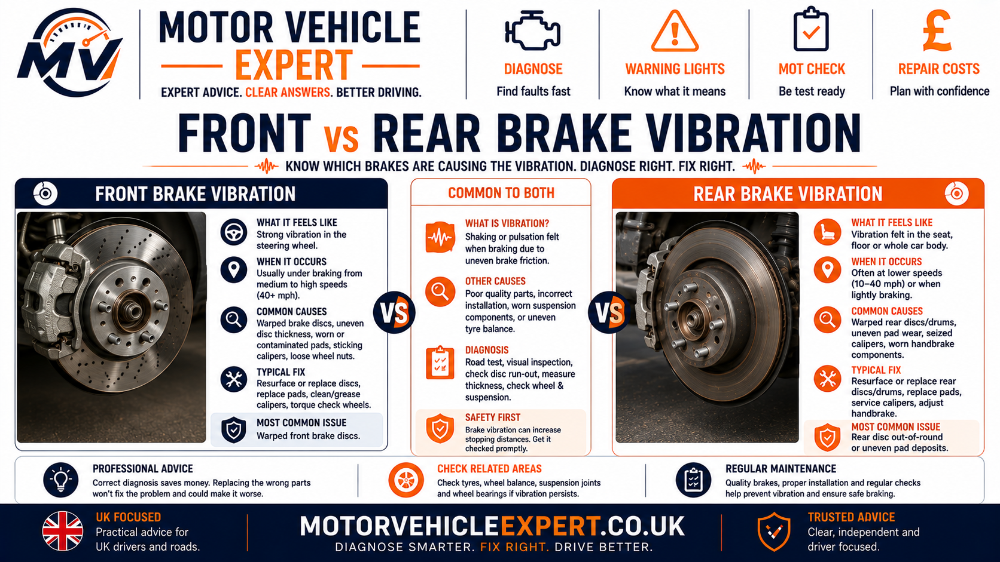
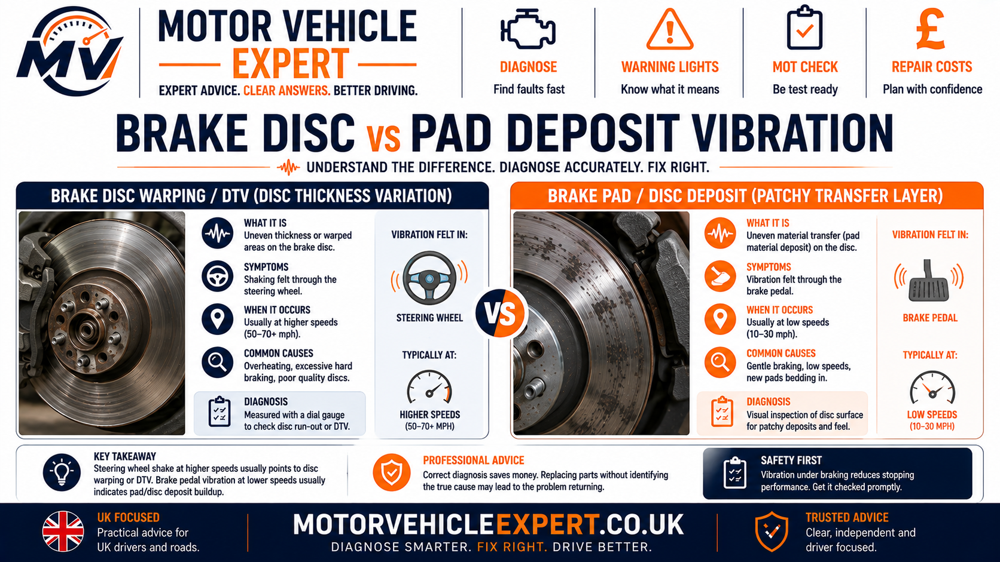
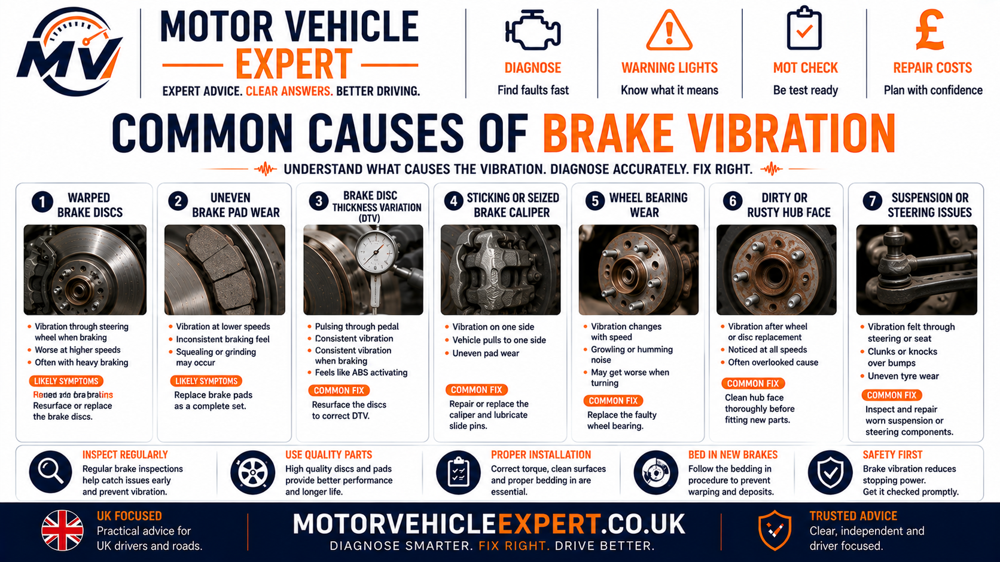
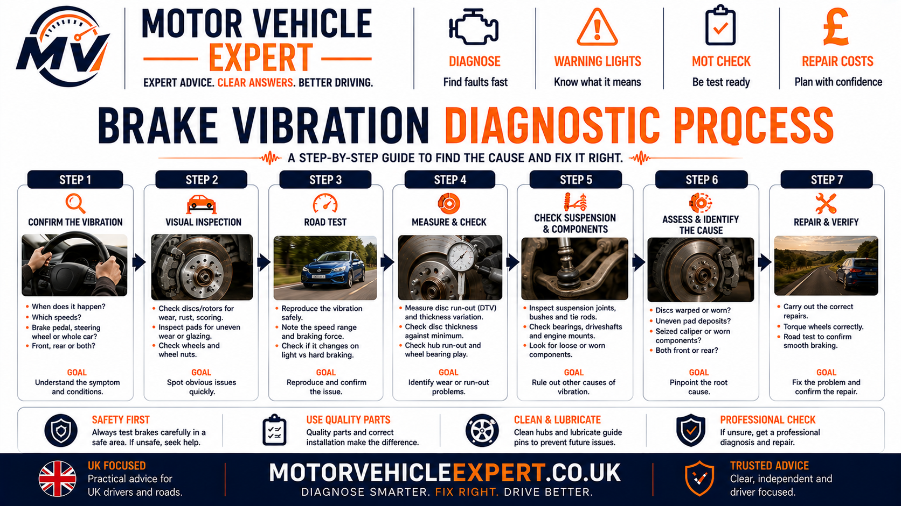
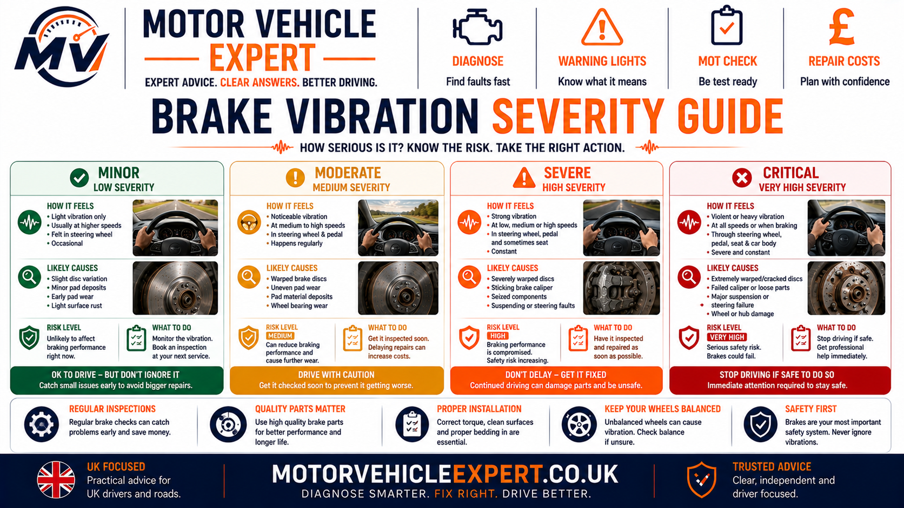
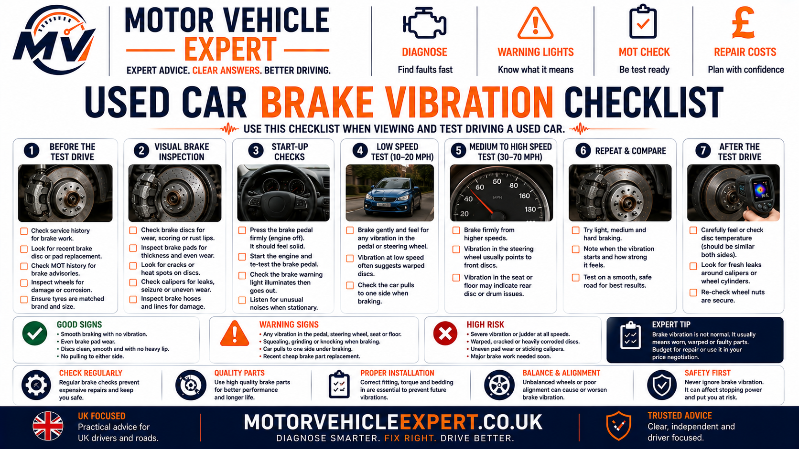
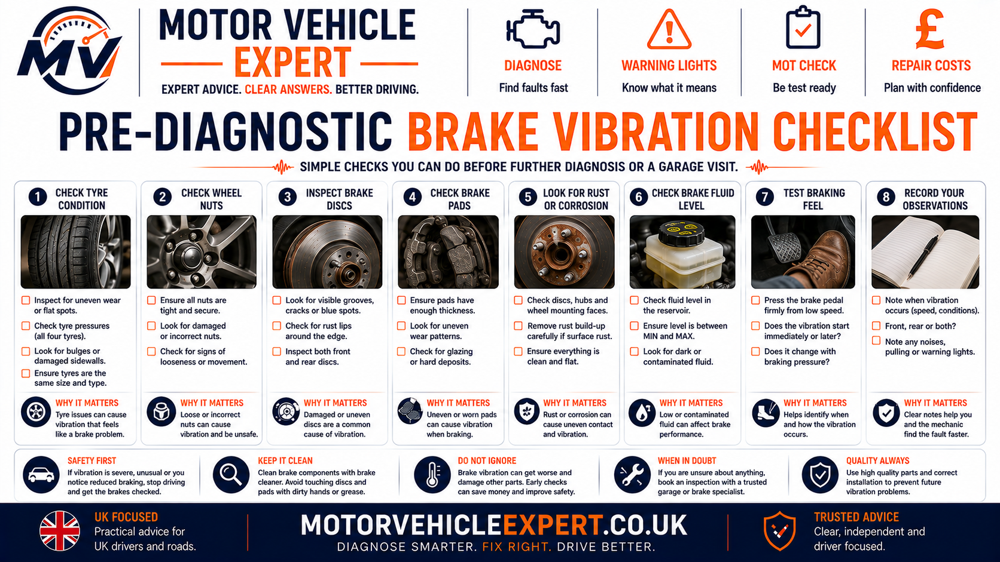

Why Does My Car Shake When Braking?
A car that shakes when braking usually has a fault that causes the braking force or wheel position to change repeatedly as the wheel rotates. The most common areas to investigate are brake disc thickness variation, uneven pad deposits, disc or hub run-out, sticking calipers, hub corrosion, suspension movement and wheel-bearing play.
Where you feel the vibration is one of the strongest early diagnostic clues. Shake through the steering wheel usually directs attention towards the front brakes, hubs, wheels, bearings and front suspension. Pulsation through the brake pedal often increases suspicion of variation at the disc or hub. A vibration felt mainly through the seat or body can place more attention on the rear axle.
Steering Wheel Shakes
Start with the front brake discs, pads, hubs, wheel bearings and front suspension because vibration from the front axle is transmitted directly into the steering system.
Brake Pedal Pulsates
Repeated pedal movement can occur when disc thickness or disc position varies during rotation, creating changing braking force at the caliper.
Whole Car Vibrates
Rear brakes, tyres, wheels, bearings or movement across more than one suspension component may need to be checked.
Most Common Brake Direction
Disc thickness variation, uneven pad deposits and hub run-out are common causes when vibration appears only while the brakes are applied.
If One Wheel Runs Hot
Check for a sticking caliper piston, seized slider or another fault holding one brake partially applied.
If It Also Shakes While Cruising
Tyres, wheel balance, bent wheels, wheel bearings and suspension should move higher on the diagnostic list.
Car Shakes at High Speed →Do not replace brake discs simply because someone calls them “warped”. A proper diagnosis should confirm disc condition, disc run-out, hub cleanliness, pad transfer, caliper operation and suspension movement. If the cause is hub corrosion, excessive hub run-out or a sticking caliper, new discs can develop the same vibration again.
Strong shaking combined with poor stopping performance, severe pulling, grinding, smoke, a burning smell, excessive wheel heat, an abnormal brake pedal or an important brake warning light should be treated as a safety fault rather than ordinary brake wear.
How Brake Vibration Happens
When a healthy braking system slows the vehicle, the brake pads should apply evenly against smooth, correctly running brake discs. Braking force should build progressively without the steering wheel, brake pedal or vehicle body repeatedly moving from side to side.
Brake vibration begins when the braking force, disc position or wheel position changes as the assembly rotates. Even a small variation can be repeated many times per second at road speed, producing the familiar shake, judder or pedal pulsation that drivers feel during braking.
1. Driver Applies Brake
Hydraulic pressure moves the caliper piston and presses the pads against the rotating brake disc.
2. Disc Rotates Through Pads
Each part of the disc passes repeatedly through the brake pads as the wheel turns.
3. Braking Force Changes
Disc thickness variation, uneven friction, run-out or movement can make braking force rise and fall with each rotation.
4. Driver Feels Vibration
Those repeated force changes can reach the steering wheel, brake pedal, seat, floor or complete vehicle body.
The useful diagnostic question is not simply whether the disc looks damaged. A mechanic needs to identify what is changing as the wheel rotates: disc thickness, friction level, disc position, hub position, caliper force or suspension geometry.
How Mechanics Diagnose a Car That Shakes When Braking
A good diagnosis starts with the symptom rather than immediately replacing brake discs. A mechanic first establishes exactly when the vibration occurs, where the driver feels it and what other symptoms appear at the same time.
Those observations determine whether the first inspection should concentrate on the front brakes, rear brakes, hubs, calipers, suspension, tyres, wheels or wheel bearings.
1. Reproduce the Shake
Confirm whether vibration occurs under light braking, heavier braking, motorway-speed braking or at almost every stop.
2. Identify Where It Is Felt
Separate steering-wheel shake, pedal pulsation and vibration through the vehicle body.
3. Check Related Symptoms
Look for brake pull, grinding, hot-wheel smell, noise, warning lights or vibration while cruising.
4. Inspect the Relevant Axle
Examine discs, pads, calipers, hubs, bearings, tyres and suspension before deciding which component is responsible.
| Driver observation | First diagnostic direction | Workshop priority |
|---|---|---|
| Steering wheel shakes only when braking | Front brakes / hubs / front suspension | Front axle inspection |
| Brake pedal pulses repeatedly | Disc thickness / run-out / hub condition | Measure disc and hub |
| Seat or body vibrates | Rear brakes / tyres / bearings | Compare front and rear axle |
| Car shakes even without braking | Tyres / wheels / balance / bearings | Separate road-speed vibration first |
| Shake + one hot wheel | Caliper drag / seized slider | Urgent brake inspection |
| Shake began after brake replacement | Hub face / fitment / run-out / bedding | Recheck installation |
If vibration exists only when braking, start with the braking system and its mounting surfaces. If the same vibration is present while cruising with the brakes released, tyres, wheels and bearings move much higher on the diagnostic list.
Where You Feel the Brake Vibration Matters
The driver may describe every brake-vibration problem as the car “shaking”, but the physical location of the vibration gives a mechanic useful information about which axle and components should be checked first.
Steering Wheel
Strong steering-wheel movement commonly points towards front brake discs, hubs, front wheel bearings or steering and suspension movement.
Brake Pedal
Repeated pulsation through the pedal increases suspicion of disc thickness variation, disc run-out or hub-related movement.
Seat or Vehicle Body
A shake felt through the seat or body can direct attention towards rear brakes, rear hubs, tyres, wheels or bearings.
Brake Pedal + Steering Wheel
Strong vibration through both areas can indicate a significant front brake or hub-related problem.
Vibration + Pulling
Add caliper operation, brake balance, suspension movement and tyre condition to the inspection.
Vibration + Grinding
Inspect friction parts urgently because worn pads or damaged discs may be involved.
Brakes Grinding When Driving →Why the Steering Wheel Shakes When Braking
When vibration originates from the front wheel assemblies, it can travel through the hubs, suspension and steering linkage directly into the steering wheel. This is why front brake problems are commonly associated with steering-wheel shake.
Front brake discs are an important first check, but they are not the only possibility. Hub run-out, wheel-bearing movement, suspension bushes, ball joints, track rod ends, wheels and tyres can all influence what the driver feels.
Front Disc Variation
Changing disc thickness or running position can repeatedly vary braking force at the front axle.
Front Hub Run-Out
If the hub itself runs out of true, a correctly manufactured disc can still rotate unevenly.
Hub-Face Corrosion
Rust trapped between the disc and hub can prevent the disc from sitting squarely.
Suspension Bushes
Worn bushes can allow the wheel position to move under braking load and amplify vibration.
Steering Joints
Wear in ball joints or track rod ends can allow vibration to become more noticeable through the steering wheel.
Wheel Bearing Movement
Excessive bearing movement can alter hub and disc position during braking.
Wheel Bearing Noise Guide →It tells the mechanic that the front axle deserves attention. Measurement and physical inspection are still required before condemning the brake discs.
Why the Brake Pedal Pulsates When Braking
Pedal pulsation can occur when the distance between the brake pads and disc surfaces changes repeatedly as the disc rotates. That movement can be transmitted through the caliper piston and hydraulic system back towards the brake pedal.
Disc Thickness Variation
If one part of the disc is slightly thicker than another, braking force can change once per wheel rotation.
Disc Run-Out
A disc that does not rotate perfectly square to the hub can move laterally relative to the pads.
Hub Run-Out
A hub mounting problem can make the disc appear to have a disc fault even when the replacement disc itself is sound.
Uneven Pad Transfer
Uneven friction material on the disc face can create changing braking force without major physical disc distortion.
Caliper Movement
Sticking sliders or pistons can create inconsistent clamping force and uneven brake wear.
ABS Operation
Normal ABS intervention can pulse the pedal during emergency braking, but repeated pulsation during ordinary braking is a different symptom and needs diagnosis.
ABS pedal feedback occurs when the anti-lock system is actively controlling wheel slip. Brake-vibration pulsation can occur during ordinary braking even when ABS is not operating.
Front vs Rear Brake Vibration
Identifying whether vibration originates primarily from the front or rear axle helps avoid replacing the wrong brake parts. Front and rear vibration can feel different because the front axle is connected directly to the steering system.
More Likely to Affect the Steering Wheel
- ✓ Steering wheel shakes under braking.
- ✓ Vibration becomes stronger from higher speeds.
- ✓ Front disc and hub measurements need checking.
- ✓ Front suspension movement can amplify the shake.
- ✓ Front wheel-bearing condition should be considered.
More Likely to Be Felt Through the Body
- ✓ Seat or floor vibration may be stronger.
- ✓ Steering wheel may remain relatively calm.
- ✓ Rear discs, pads and calipers need inspection.
- ✓ Rear tyres, wheels and bearings may contribute.
- ✓ Whole-car vibration may involve more than one axle.

Vehicle design can transmit vibration through the body in different ways. A road test and physical inspection are still required before deciding whether the front or rear axle is responsible.
Brake Disc Variation vs Uneven Pad Deposits
Drivers often describe all brake vibration as “warped discs”. In practice, similar symptoms can be created by different mechanisms. Two important possibilities are physical variation in the brake disc and uneven friction-material transfer onto the disc surface.
Disc Thickness / Run-Out Problem
The disc may vary in thickness, or its running position may move laterally as it rotates. This repeatedly changes pad contact and braking force.
- ✓ Pedal pulsation may be noticeable.
- ✓ Steering vibration may increase with braking speed.
- ✓ Dial-gauge measurement can confirm run-out.
- ✓ Micrometer measurement can identify thickness variation.
Uneven Pad Deposits
Friction material can transfer unevenly onto the disc, creating areas with different friction characteristics. This can generate repeated braking-force variation even if the disc is not dramatically distorted.
- ✓ May feel very similar to a “warped” disc.
- ✓ Can develop after overheating or poor bedding.
- ✓ Disc-face condition may show uneven colouring.
- ✓ Caliper drag should be ruled out.

| Workshop finding | Disc / hub variation | Pad-deposit direction |
|---|---|---|
| Excessive lateral run-out measured | Strong evidence | Not primary confirmation |
| Thickness differs around disc | Strong evidence | May coexist |
| Hub face heavily corroded | Possible installation cause | Indirect |
| Uneven friction patches / heat marks | Possible | Strong clue |
| Sticking caliper found | Can create heat-related variation | Can create uneven transfer |
| Vibration starts after poor bedding | Possible | More likely |
Disc Thickness Variation and Brake Judder
Disc thickness variation means the brake disc is not exactly the same thickness at every measured point around its working surface. As thicker and thinner areas pass through the pads, the braking force can change repeatedly.
The resulting force variation can be transmitted back through the caliper and suspension as pedal pulsation, steering-wheel shake or general brake judder.
Uneven Wear
Disc surfaces can develop different wear rates around the circumference.
Previous Run-Out
A disc running slightly out of true can eventually develop uneven wear patterns.
Hub Contamination
Rust or debris behind a disc can influence how squarely it rotates on the hub.
Caliper Drag
Excessive heat from a dragging brake can contribute to uneven friction and disc condition.
Measurement Matters
A micrometer should be used at several positions around the disc rather than relying only on visual inspection.
Check Manufacturer Limits
Measurements should be compared with the appropriate vehicle specification rather than a generic limit.
Uneven Brake Pad Deposits
Modern brake pads are designed to work with a controlled transfer layer of friction material on the disc surface. Problems can occur when that transfer becomes uneven.
Areas of different friction can grab the pads differently as the disc rotates. The resulting change in braking torque can feel very similar to a mechanically distorted disc.
Heavy Heat
Repeated hard braking can produce very high temperatures and uneven friction conditions.
Poor Bedding
New pads and discs that are not bedded appropriately may develop uneven transfer characteristics.
Holding the Brake When Very Hot
Keeping pads clamped against a very hot disc can contribute to concentrated material transfer in some circumstances.
Sticking Caliper
A brake that drags can overheat one disc and upset the friction surfaces.
Uneven Colouring
Heat patches or irregular disc appearance can support the investigation but should not replace measurement.
Recurring Vibration
If new discs develop vibration quickly, investigate the caliper, hub and fitting process rather than repeatedly replacing discs.
Common Causes of a Car Shaking When Braking
Brake vibration is not one single fault. The correct diagnosis depends on where the shake is felt, when it appears, whether it changes with speed and what the workshop finds during physical inspection and measurement.
Disc Thickness Variation
Changing disc thickness can create repeated braking-force variation and pedal pulsation.
Uneven Pad Deposits
Uneven transfer material can produce changing friction around the disc and feel similar to a warped disc.
Disc Run-Out
Lateral disc movement as it rotates can lead to uneven contact and eventually uneven wear.
Hub Run-Out or Corrosion
A dirty, corroded or out-of-true hub can prevent the disc from rotating squarely.
Sticking Caliper
A seized piston or slider can create uneven braking, heat, pad wear, pulling and vibration.
Suspension Wear
Worn bushes, joints or arms can allow wheel geometry to move when braking load increases.
Wheel Bearing Wear
Excessive bearing movement can affect hub and brake-disc position under load.
Tyre or Wheel Problem
Tyre damage, wheel imbalance or a bent wheel can create vibration that becomes more obvious while braking.
High-Speed Vibration Guide →Incorrect Brake Installation
Hub-face contamination, poor seating, fitting errors or wheel-fastener problems can cause vibration after new brake parts are installed.

Brake discs are a common cause of judder, but replacing them without checking the hub, caliper and suspension can waste money and allow the vibration to return.
Hub Run-Out and Corrosion Behind the Brake Disc
The brake disc relies on the wheel hub to provide a clean, square mounting surface. If corrosion, dirt or mechanical run-out exists at the hub, the disc may not rotate perfectly true even when the disc itself is new.
Rust Between Hub and Disc
A small raised corrosion patch can prevent the disc from sitting completely flat.
Hub Run-Out
Mechanical variation in the hub can be transferred directly into the mounted brake disc.
New Disc Vibrates Again
Rapid recurrence after replacement should trigger a hub and caliper investigation.
Can a Sticking Brake Caliper Cause Vibration?
Yes. A caliper piston, slider or pad that does not move freely can create uneven braking force and excessive heat. The affected brake may remain partially applied, wear unevenly and disturb the disc and pad friction surfaces.
One Wheel Runs Hot
Significant temperature difference can indicate a brake that is not releasing correctly.
Uneven Pad Wear
One pad may wear substantially faster than its partner.
Vehicle Pulls
Unequal brake force can make the vehicle move left or right during braking.
Burning Smell
Constant friction can overheat the disc and pad material.
Disc Heat Damage
Excess temperature can contribute to friction variation and recurring brake judder.
New Parts Can Be Damaged
New discs and pads may develop problems quickly if caliper drag is not repaired first.
A wheel that becomes unusually hot, smells strongly of overheated brakes or produces smoke should not be dismissed as ordinary brake judder.
How Suspension and Steering Wear Can Cause Brake Shake
Braking transfers vehicle weight forwards and places significant load through suspension bushes, control arms, ball joints and steering components. Wear in these parts can allow the wheel to move when braking force is applied.
Control Arm Bushes
Worn bushes can allow fore-and-aft movement as braking load increases.
Ball Joints
Excess movement can affect wheel control and make braking vibration more severe.
Track Rod Ends
Steering play can increase the amount of movement felt through the steering wheel.
Suspension Arms
Damaged or worn arms can alter wheel position under braking load.
Mounting Wear
Worn suspension mountings can allow additional wheel and body movement.
Existing Brake Vibration Amplified
Suspension wear may not create the original disc variation but can make a relatively small brake fault feel much more severe.
Can a Wheel Bearing Cause Shaking When Braking?
A wheel bearing supports the hub and keeps the wheel rotating in a controlled position. Excessive bearing movement can allow hub position to change and may influence brake-disc movement under braking load.
Bearing faults often provide other clues as well, including humming, rumbling or roughness that changes with road speed or cornering load.
Tyres and Wheels That Mimic Brake Vibration
A vibration that exists before the brake pedal is pressed may come from the tyres or wheels rather than the braking system. Braking can simply make an existing road-speed vibration feel stronger as vehicle load changes.
Wheel Imbalance
Usually produces speed-related vibration even while cruising with the brakes released.
Bent Wheel
Impact damage can create wheel run-out and vibration.
Tyre Damage
Bulges, internal damage or severe uneven wear can create significant vibration.
Incorrect Tyre Pressure
Pressure problems can alter vehicle stability and should be corrected during diagnosis.
Vibration Before Braking
If the car already shakes while cruising, do not diagnose the symptom as a brake-disc fault automatically.
Compare at High Speed
Road-speed-only vibration has a different diagnostic path from vibration triggered specifically by brake application.
Car Shakes at High Speed →Car Shakes When Braking After New Discs or Pads
If brake vibration begins soon after discs or pads have been replaced, do not assume the new parts are automatically defective. Installation conditions and unrepaired surrounding faults should be checked first.
Dirty Hub Face
Rust or debris behind the new disc can prevent correct seating.
Hub Run-Out
Existing hub variation can transfer directly into the new disc.
Sticking Caliper
A seized slider or piston can overheat newly fitted friction parts.
Poor Bedding
Uneven friction transfer can develop if the new surfaces are not conditioned correctly.
Wheel Fastener Issue
Wheel security and correct tightening should be confirmed after wheel or brake work.
Suspension Fault Still Present
New brakes will not repair worn bushes, ball joints or steering components.
Replacing discs repeatedly without measuring the hub, checking the mounting surface and confirming caliper operation is not a complete diagnosis.
Professional Diagnostic Workflow for Brake Vibration
A professional brake-vibration diagnosis should prove where the vibration originates before parts are replaced. The technician needs to separate friction-surface variation from hub run-out, caliper drag, suspension movement, wheel-bearing play and tyre or wheel vibration.
The most reliable workflow combines a controlled road test with physical inspection and measurement. Visual inspection alone is not enough when the complaint involves brake judder or pedal pulsation.
1. Confirm the Complaint
Establish the speed range, braking pressure and exact area where the driver feels the vibration.
2. Road-Test the Vehicle
Reproduce the symptom safely and compare light, moderate and higher-speed braking.
3. Inspect the Brake Assembly
Check discs, pads, calipers, sliders, hubs and visible friction surfaces.
4. Measure the Components
Use suitable measuring equipment to check disc run-out, thickness variation and hub condition.
5. Check Caliper Operation
Confirm that pistons, sliders and pads move correctly and are not creating uneven braking force.
6. Check Suspension & Steering
Look for movement that can allow the wheel to shift under braking load.
7. Confirm Bearing & Wheel Condition
Rule out wheel-bearing movement, tyre faults and wheel vibration before condemning the brake discs.
8. Repair the Root Cause
Correct the underlying fault and verify that the vibration has disappeared after repair.

If a mechanic suspects disc or hub variation, the next step should be measurement rather than replacing parts purely because the steering wheel shakes.
How Mechanics Road-Test Brake Vibration
A controlled road test helps identify whether the vibration is caused specifically by braking or already exists because of a tyre, wheel or bearing problem.
Cruise Without Braking
Check whether vibration already exists at the same road speed with the brakes released.
Light Brake Application
Note whether the vibration begins immediately with light pedal pressure.
Moderate Braking
Compare vibration strength as braking force increases.
Higher-Speed Braking
Disc or hub variation often becomes easier to feel when more braking energy is involved.
Steering Response
Identify whether the steering wheel oscillates or the vehicle simply vibrates through the body.
Brake Pull
Pulling left or right raises suspicion of unequal braking, caliper faults, tyres or suspension movement.
| Road-test behaviour | Likely direction | Next step |
|---|---|---|
| No vibration until brake pedal is applied | Brake / hub / suspension under load | Inspect braking system first |
| Vibration already present while cruising | Tyres / wheels / bearings | Separate road-speed fault |
| Steering wheel shake increases with braking speed | Front disc / hub / suspension | Front axle measurement |
| Pedal pulses repeatedly | Disc thickness / run-out | Measure disc and hub |
| Vehicle pulls and one wheel runs hot | Caliper drag | Inspect piston and sliders |
Wheel-Off Inspection for Brake Judder
Once the road test confirms the braking system is involved, the wheel should be removed so the brake assembly and hub area can be inspected properly.
Brake Disc Surface
Look for scoring, heat marks, corrosion, uneven colouring and friction patches.
Inner & Outer Pads
Compare thickness and wear patterns because uneven wear can reveal caliper problems.
Caliper & Carrier
Check mounting security, piston condition, slider movement and pad fit.
Hub Face
Look for corrosion, dirt or raised material between the hub and brake disc.
Wheel Bearing
Check for roughness or excessive movement where applicable.
Suspension Movement
Inspect joints and bushes that control the affected wheel under braking load.
How Mechanics Measure Brake Disc Run-Out
Disc run-out is lateral movement of the disc as it rotates. Instead of the disc face remaining perfectly square to the hub, it moves slightly from side to side.
A dial indicator can be positioned against the disc face while the disc is rotated. The amount of movement is measured and compared with the correct manufacturer specification.
Clean Mounting
The disc must be correctly seated and secured before a meaningful run-out reading is taken.
Dial Indicator
The measuring tip follows the disc face while the assembly is rotated.
Compare With Specification
Acceptable run-out varies by vehicle and should not be judged using a single generic value.
Excessive Disc Run-Out
May come from the disc, mounting contamination or the hub underneath it.
Recheck the Hub
If excessive run-out remains, the technician should separate disc variation from hub variation.
Do Not Guess Visually
Small run-out may not be obvious by eye but can still contribute to vibration.
Measuring Brake Disc Thickness Variation
Disc thickness variation is checked by measuring the disc at multiple points around its circumference. A micrometer is used at comparable positions across the braking surface.
Multiple Measurements
One measurement cannot show whether thickness varies around the disc.
Consistent Measuring Position
Measurements should be taken at a consistent radius on the friction surface.
Minimum Thickness
Overall disc thickness must also remain above the manufacturer's service limit.
Thickness Difference
Variation around the disc can produce repeated changes in brake force.
Check Both Discs
Components on both sides of the axle should be compared, even if the driver feels vibration more strongly from one side.
Confirm Before Replacement
Measurement helps determine whether disc replacement is justified or another fault is responsible.
Hub-Face and Hub Run-Out Checks
The brake disc can only run correctly if the hub underneath it provides a clean and true mounting surface. This is especially important when vibration appears shortly after new brake discs have been installed.
Remove Rust Scale
Raised corrosion can hold one area of the disc away from the hub.
Check for Dirt & Debris
Foreign material between mating surfaces can disturb disc alignment.
Inspect Hub Damage
Impact or previous repair damage can affect the mounting surface.
Measure Hub Run-Out
If disc run-out remains excessive, the hub itself should be checked.
Check Bearing Influence
Excessive bearing movement can affect hub measurement.
Recheck After Cleaning
Measurements should be repeated after correcting mounting contamination.
If the disc is fitted against corrosion or an out-of-true hub, vibration can return even when the replacement brake parts are new.
How Mechanics Confirm Uneven Pad Deposits
Uneven pad deposits are diagnosed by combining disc appearance, braking history, measurement and caliper condition rather than assuming every visible mark is automatically the cause.
Surface Pattern
Uneven colouring or friction patches may support the diagnosis.
Heat History
Repeated heavy braking or caliper drag may explain abnormal friction transfer.
Recent Brake Replacement
Poor bedding or installation problems should be considered if symptoms started soon after repair.
Run-Out Measurement
Physical disc and hub variation should be checked before diagnosing a purely friction-related problem.
Caliper Condition
A sticking brake can create the heat conditions that lead to uneven friction surfaces.
Recurrence Pattern
Repeated vibration after brake replacement strongly suggests an unresolved cause outside the disc alone.
Caliper, Slider and Piston Checks
Brake vibration can develop when one pad is applied more strongly than the other or when the brake fails to release correctly after pedal pressure is removed.
Slider Pins
Floating calipers rely on free slider movement to apply both pads evenly.
Piston Movement
A sticking piston can keep one pad loaded against the disc.
Pad Movement
Pads should move correctly in the carrier without binding because of corrosion or damaged hardware.
Uneven Pad Wear
Large differences between inner and outer pad thickness can reveal caliper operation problems.
Heat Comparison
One wheel being much hotter than the opposite side can support a brake-drag diagnosis.
Hydraulic Release
If the caliper itself appears healthy, trapped hydraulic pressure or hose faults may also need consideration.
How Mechanics Confirm Suspension-Related Brake Shake
Suspension wear should be checked when brake measurements do not fully explain the vibration, or when the steering feels unstable under braking.
Control Arm Bushes
Check for movement that allows the wheel to shift forwards or backwards under braking load.
Ball Joints
Excessive joint movement can reduce wheel control and amplify brake vibration.
Track Rod Ends
Steering play can make front-axle vibration more noticeable through the steering wheel.
Suspension Arms
Check for bent, damaged or loose components.
Mountings
Worn suspension mountings can allow additional movement under load.
Compare With Brake Measurements
Suspension play may amplify a smaller brake fault rather than being the only cause.
How Mechanics Confirm Wheel-Bearing Influence
A wheel bearing that allows excessive hub movement can affect disc position and braking feel. The bearing should therefore be checked when disc and hub measurements are inconsistent or when vibration is joined by road-speed noise.
More Typical of Brake Vibration
- ✓ Vibration begins when braking.
- ✓ Pedal pulsation is present.
- ✓ Disc or hub variation is measured.
- ✓ Brake application strongly changes the symptom.
More Typical of Wheel-Bearing Wear
- ✓ Humming or rumbling increases with road speed.
- ✓ Noise changes with cornering load.
- ✓ Hub movement or roughness is present.
- ✓ Vibration may exist even without braking.
How a Mechanic Decides What Actually Needs Replacing
Once the measurements and physical checks are complete, the mechanic should be able to explain the fault using evidence rather than simply recommending brake discs because vibration is present.
Measured Disc Fault
Replace or correct the brake components according to condition and specification.
Hub Fault Found
Correct the hub or mounting problem before relying on new brake discs.
Caliper Drag Found
Repair the caliper or hydraulic cause before fitting new friction parts.
Brakes Measure Correctly
Continue into suspension, steering, bearing, tyre and wheel diagnosis.
If the workshop cannot explain why the vibration occurred, the chance of replacing otherwise serviceable parts or allowing the fault to return is higher.
Brake Vibration Severity Guide
Not every brake vibration has the same risk. Severity depends on braking performance, vibration strength, vehicle stability, heat, noise and whether the symptom is worsening.
Mild Vibration
Light shake under braking with normal stopping performance and no additional safety symptoms.
Noticeable Judder
Repeated steering or pedal vibration that is becoming easier to feel.
Strong Shake + Pull
Strong vibration combined with vehicle pull, brake drag or unstable steering.
Vibration + Safety Fault
Poor braking, grinding, smoke, severe heat, abnormal pedal feel or major warning symptoms.

Mechanic-Style Brake Vibration Decision Table
| Symptom / finding | Most likely direction | Workshop confirmation | Priority |
|---|---|---|---|
| Steering wheel shakes only under braking | Front disc / hub / suspension | Measure front disc and hub | Medium–High |
| Brake pedal pulses | Disc thickness / run-out | Micrometer + dial indicator | Medium–High |
| Whole car shakes but steering remains calm | Rear axle / tyres / bearings | Compare front and rear systems | Medium |
| Vibration started after new discs | Hub contamination / run-out / fitment | Remove disc and measure hub | High |
| One wheel much hotter | Caliper drag | Inspect piston, sliders and hydraulic release | High |
| Discs measure correctly but steering still shakes | Suspension / steering / wheel | Inspect bushes, joints, tyres and wheels | Medium–High |
| Road-speed humming plus brake vibration | Wheel bearing | Check hub roughness and movement | High |
| Vibration + grinding | Brake wear / disc damage | Immediate friction-part inspection | High |
| Vibration + smoke / poor braking | Severe brake fault | Stop-driving inspection | Critical |
Brake vibration should be diagnosed by matching the symptom with physical measurements. Steering-wheel shake, pedal pulsation and disc appearance are useful clues, but the final repair decision should be supported by inspection of the disc, hub, caliper, bearing and suspension.
Is It Safe to Drive When the Car Shakes Under Braking?
Brake vibration should not automatically be treated as harmless. The driving decision depends on how severe the shake is, whether braking performance remains predictable and whether other warning symptoms such as pulling, grinding, excessive wheel heat, smoke or an abnormal brake pedal are present.
A mild vibration with a firm pedal and otherwise normal braking may allow a short careful journey directly for inspection. Strong vibration or any sign that braking performance is reduced needs much greater caution.
Mild Brake Judder
Light vibration that only appears during braking, with a firm pedal and normal stopping behaviour.
Noticeable Steering Shake
Repeated steering-wheel movement or pedal pulsation that is becoming stronger should be diagnosed promptly.
Shake + Pulling
Strong vibration combined with brake pull can indicate uneven braking force, caliper problems or suspension movement.
Shake + Serious Brake Symptoms
Weak braking, severe grinding, smoke, excessive wheel heat or an abnormal pedal can indicate a safety-critical fault.
A Short Journey for Inspection May Be Reasonable When...
- ✓ The brake pedal remains firm and predictable.
- ✓ Stopping performance feels normal.
- ✓ The vibration is mild rather than violent.
- ✓ The car does not pull strongly under braking.
- ✓ There is no grinding, smoke or burning smell.
- ✓ No wheel appears abnormally hot.
Stop Driving and Arrange Inspection or Recovery When...
- ! The pedal becomes soft, low or unpredictable.
- ! Stopping performance has noticeably reduced.
- ! The vehicle pulls sharply under braking.
- ! Grinding accompanies the vibration.
- ! A wheel becomes excessively hot or produces smoke.
- ! The vibration suddenly becomes violent.
Do not continue driving simply because the car can still stop. If the vibration is accompanied by reduced braking performance, instability, severe heat or an abnormal pedal, the underlying fault may be more serious than ordinary disc judder.
What Happens If Brake Vibration Is Ignored?
The consequences depend on the original cause. Some vibration begins with relatively minor disc or friction variation, while other cases involve a sticking caliper, wheel-bearing movement, hub problems or worn suspension that can continue deteriorating.
1. Vibration Begins
The driver first notices light steering shake, pedal pulsation or body vibration under braking.
2. Wear Pattern Develops
Disc, pad, caliper or hub problems can create increasingly uneven braking surfaces.
3. Heat and Movement Increase
Brake drag, suspension movement or bearing wear may make the vibration stronger and introduce additional symptoms.
4. Repair Scope Increases
A straightforward friction-part repair can become a larger brake, hub, bearing or suspension job.
Disc Damage
Continued uneven braking can worsen disc surface condition or thickness variation.
Uneven Pad Wear
Sticking calipers or poor disc contact can accelerate uneven friction-material wear.
Brake Overheating
A dragging brake can create excessive temperature and further damage the friction surfaces.
Suspension Wear Becomes More Noticeable
Existing bush or joint movement can make steering shake progressively worse under braking.
Bearing Problems Progress
If hub movement is caused by bearing wear, the underlying bearing defect still requires repair.
Repair Costs Rise
Delayed diagnosis can turn one worn component into a repair involving several related parts.
If the real cause is hub run-out, caliper drag or suspension movement, fitting new discs without fixing that fault can allow the vibration to return.
Typical UK Repair Costs for Brake Vibration
Repair cost depends on what the workshop confirms. Brake vibration does not automatically mean the car needs discs and pads. The fault may instead involve a caliper, wheel bearing, hub, tyre, wheel or suspension component.
These figures are broad UK planning ranges rather than fixed quotations. Vehicle size, brake design, parts quality, labour rate and whether genuine, aftermarket or performance components are fitted can change the final price considerably.
Front Discs + Pads
Replacement where front friction parts are confirmed as the cause of steering shake or pedal pulsation.
£220–£500+ per axleRear Discs + Pads
Required where rear braking variation is producing body or seat vibration.
£200–£450+ per axleBrake Caliper Repair / Replacement
Necessary if a piston, slider or complete caliper is creating unequal braking force or brake drag.
£150–£500+ per cornerHub Cleaning / Brake Refit
Relevant where corrosion or debris prevents the disc from seating correctly on the hub.
Labour DependentWheel Bearing Replacement
Required where bearing movement or roughness is confirmed as part of the vibration fault.
£150–£450+ per cornerBush / Arm / Joint Repair
Cost varies depending on whether a bush, complete arm, ball joint or steering component needs replacement.
£120–£500+ depending on componentWheel Balance / Tyre Repair
Relevant when vibration is present while cruising and is not caused solely by the brakes.
Fault DependentBrake / Hub Diagnosis
Proper diagnosis may include disc-thickness measurement, run-out measurement and hub inspection.
Garage Labour DependentLarger Brake & Suspension Repair
Costs can rise substantially if vibration involves friction parts, a seized caliper and worn suspension at the same time.
£500+ Possible| Confirmed cause | Likely repair | Cost risk | Mechanic decision |
|---|---|---|---|
| Disc variation with healthy hub and caliper | Discs + pads | Medium | Replace friction parts on affected axle |
| Corrosion behind disc | Clean hub / refit / remeasure | Lower | Correct mounting before replacing parts |
| Excessive hub run-out | Hub / bearing investigation | Medium–High | Do not rely on new discs alone |
| Sticking caliper | Caliper / slider repair | Medium–High | Correct brake drag first |
| Suspension play | Bush / arm / joint repair | Medium | Restore wheel control |
| Wheel bearing movement | Bearing / hub replacement | Medium | Confirm brake condition afterwards |
| Tyre or wheel vibration | Balance / tyre / wheel repair | Low–Medium | Avoid unnecessary brake replacement |
| Multiple faults present | Combined repair | High | Prioritise safety-critical defects |
If brake vibration returns after replacement, the next repair decision should be based on hub measurements, caliper condition and suspension checks rather than simply fitting another set of discs.
Can Brake Vibration Fail an MOT?
Brake vibration is a symptom rather than a standalone MOT defect. What matters during the MOT is the condition and operation of the components causing the vibration.
A vehicle can therefore have MOT problems if the underlying cause involves defective brakes, excessive brake imbalance, unsafe steering movement, wheel-bearing defects, damaged tyres, insecure wheels or defective suspension components.
Brake Condition
Pads, discs, calipers and associated brake components are inspected according to the applicable MOT criteria.
Brake Performance
Service-brake operation, efficiency and braking balance can affect the test result.
Steering Defects
Excessive steering wear or roughness can be relevant where steering movement contributes to the symptom.
Suspension Wear
Suspension arms, joints, bushes and related components can affect the MOT where wear reaches the defect criteria.
Wheel Bearings
Excessive wheel-bearing movement or roughness can affect roadworthiness and the MOT result.
Wheel Bearings & MOT →Tyres & Wheels
Unsafe tyre condition or wheel defects should also be ruled out when vibration occurs while driving.
If the car shakes under braking before test day, diagnose the fault rather than waiting to see whether the MOT identifies it. The vibration may point to a developing brake, steering, bearing, tyre or suspension problem.
Should You Buy a Used Car That Shakes When Braking?
Treat brake vibration as an unresolved repair and safety risk until the cause has been confirmed. Do not assume the vehicle only needs inexpensive brake discs.
The vibration may involve discs and pads, but it can also expose caliper drag, hub run-out, wheel-bearing movement, tyre or wheel faults and worn suspension.
Known Minor Cause
Lower concern where an independent inspection identifies a straightforward repair with no additional brake or chassis problems.
Discs + Pads Confirmed
A predictable repair if hubs, calipers, bearings and suspension are confirmed healthy.
Vibration After Recent Brake Work
Investigate why new brakes have not solved the problem before accepting the seller's explanation.
One Wheel Overheating
Suspect brake drag or caliper problems and price the repair before purchase.
Vibration + Steering Play
The car may require both braking and suspension or steering repairs.
Severe Unstable Braking
Strong pulling, poor pedal feel, grinding or violent vibration needs professional diagnosis before purchase.

Ask why the discs are believed to be responsible and whether the hub, caliper, suspension and wheel bearings have been checked. A confident diagnosis should be supported by inspection or measurement.
Pre-Diagnostic Brake Vibration Checklist
A driver should not dismantle a safety-critical braking system simply to diagnose vibration, but several observations can make the workshop diagnosis quicker and more accurate.
Where Is the Shake Felt?
Note whether it is strongest through the steering wheel, brake pedal, seat or complete vehicle.
Does It Happen Without Braking?
Vibration while cruising points towards tyres, wheels or bearings as well as the brakes.
What Speed Triggers It?
Note whether the shake appears mainly during higher-speed braking or during almost every stop.
Does the Car Pull?
Pulling can indicate unequal braking, tyres or suspension movement.
Is There Grinding?
Grinding raises the priority because friction parts may be badly worn or damaged.
Any Hot-Wheel Smell?
A burning smell after a short journey can indicate brake drag.
Recent Brake Work?
Tell the garage if vibration began soon after new discs, pads, wheel or suspension work.
Warning Lights?
Note any brake, ABS or stability-control warning lights.
MOT History?
Previous brake, tyre, bearing or suspension advisories can provide useful context.

Brake discs and calipers can become hot enough to cause serious burns. Wheel-temperature comparison and brake dismantling should be carried out using appropriate workshop methods.
How to Reduce the Risk of Brake Vibration Returning
Brake vibration cannot always be prevented, but correct servicing and installation reduce the chance of avoidable recurrence.
Clean Hub Faces Properly
Remove corrosion and contamination before new discs are installed.
Measure When Needed
Check disc and hub run-out when vibration has occurred or repeatedly returned.
Service Caliper Movement
Sliders and pads should move correctly so braking force is applied and released evenly.
Bed New Brakes Correctly
Follow the appropriate bedding guidance for the fitted friction components.
Tighten Wheels Correctly
Wheel fasteners should be secure and tightened using the correct procedure and specification.
Repair Caliper Drag Early
Do not allow a sticking brake to overheat new pads and discs.
Inspect Suspension Wear
Worn bushes and joints can make smaller brake variations much more noticeable.
Investigate High-Speed Vibration
Tyre and wheel vibration should be corrected rather than blamed automatically on the brakes.
Act When Symptoms Start
Early diagnosis is usually cheaper than waiting until several related components are affected.
Use the Diagnostic App to Narrow Brake Vibration
The Motor Vehicle Expert Diagnostic App can help organise the symptom before you authorise repairs. Start with where the vibration is felt, when it appears and whether braking changes the symptom.
Identify the Vibration
Steering wheel, pedal and whole-car vibration lead to different diagnostic priorities.
Add Supporting Symptoms
Pulling, grinding, heat, warning lights and road-speed vibration help narrow the cause.
Confirm Physically
Use the diagnostic direction to decide what the workshop needs to inspect and measure.
The app can help narrow the diagnostic path, but disc, hub, caliper, bearing and suspension condition must still be confirmed physically before parts are replaced.
What to Remember About a Car Shaking When Braking
What Drivers Should Do
- ✓ Identify where the vibration is felt.
- ✓ Confirm whether it happens only while braking.
- ✓ Check for pulling, grinding and wheel heat.
- ✓ Measure discs and hubs before condemning parts.
- ✓ Check calipers, bearings and suspension.
- ✓ Repair the reason the vibration developed.
What Drivers Should Avoid
- ! Calling every vibration “warped discs”.
- ! Replacing discs without checking the hub.
- ! Ignoring a sticking or overheating caliper.
- ! Ignoring suspension or bearing play.
- ! Assuming vibration after new brakes is normal.
- ! Waiting for the MOT to diagnose a safety fault.
Brake vibration is the symptom, not the diagnosis. Establish where the shake is felt, reproduce it under controlled conditions, measure the brake disc and hub, check caliper operation and confirm suspension and bearing condition before deciding what needs replacing.
Related Brake and Vibration Guides
Continue through these live Motor Vehicle Expert guides to understand brake operation, compare other vibration patterns, investigate steering and wheel-end faults and plan the next diagnostic or repair step.
Disc Brakes Explained
Understand brake discs, pads, calipers, hydraulic braking, ABS, wear patterns, inspection methods, MOT relevance and common UK repair costs.
Disc Brakes Explained →Car Shaking & Vibration Diagnosis
Compare braking vibration with idle shake, acceleration vibration, high-speed vibration, wheel imbalance and wider drivetrain or suspension faults.
Car Vibration Diagnosis →Car Shakes at High Speed
Use this guide when vibration also appears while cruising without the brake pedal applied.
High-Speed Vibration →Brakes Grinding When Driving
Compare brake vibration with grinding caused by worn pads, damaged discs, seized calipers, debris and wheel-end faults.
Grinding Brakes Guide →Brake Warning Signs
Compare vibration with squealing, grinding, pulling, pedal changes, brake warning lights and overheating.
Brake Warning Signs →Why Does My Steering Wheel Shake?
Compare brake-triggered steering shake with tyre, wheel, suspension and steering-related vibration.
Steering Wheel Shake →Wheel Bearing Noise Speeding Up
Compare braking vibration with road-speed humming, roughness, bearing play and noise that changes under cornering load.
Wheel Bearing Noise →Car Pulling to One Side
Use this guide when brake vibration is accompanied by pulling, steering instability or uneven road behaviour.
Pulling to One Side →Brake Pad Replacement Cost UK
Compare likely brake-pad repair costs where pad and disc condition are confirmed as part of the vibration fault.
Brake Pad Costs →Car Fails MOT on Brakes
Understand how worn, damaged, imbalanced or unsafe braking components can affect the MOT result.
Brake MOT Failures →Can Suspension Fail an MOT?
Check the MOT implications when suspension wear contributes to movement or instability under braking.
Suspension & MOT →Vehicle Diagnostics Hub
Continue into wider braking, steering, suspension, vibration, warning-light and wheel-end diagnostics.
Diagnostics Hub →If the same vibration is also present while cruising, use the wider vibration guide as well and compare tyres, wheels, bearings and suspension before replacing brake parts.
Car Shakes When Braking FAQs
These questions cover steering-wheel shake, pedal pulsation, disc variation, pad deposits, calipers, suspension, wheel bearings, MOT risk, repair costs and used-car buying.
Why does my car shake when braking?
A car can shake when braking because of brake disc thickness variation, uneven pad deposits, disc or hub run-out, sticking calipers, suspension wear, tyre or wheel faults, wheel bearing play or incorrect brake installation.
Does shaking when braking always mean warped brake discs?
No. Brake vibration is often blamed on warped discs, but similar symptoms can come from disc thickness variation, uneven pad deposits, hub corrosion, hub run-out, sticking calipers, suspension wear or wheel bearing movement.
Why does my steering wheel shake when braking?
Steering wheel shake under braking commonly directs diagnosis towards the front brake discs, front hubs, front wheel bearings, tyres, wheels or front suspension and steering components.
Why does my brake pedal pulsate when braking?
Brake pedal pulsation can occur when brake disc thickness or running position varies as the disc rotates, causing repeated changes in braking force at the pads and caliper.
Can rear brakes make the whole car shake when braking?
Yes. Rear brake faults can produce vibration through the body or seat rather than mainly through the steering wheel, although tyres, wheels, suspension and wheel bearings should also be considered.
Why does my car shake more when braking from motorway speed?
Higher-speed braking places more energy and load through the brakes, so disc thickness variation, pad deposits, hub run-out or suspension movement may become much easier to feel.
Can uneven brake pad deposits cause vibration?
Yes. Uneven friction material transferred onto the disc can create changing friction around each rotation and produce brake judder or pulsation that feels similar to a distorted disc.
Can a seized brake caliper cause shaking when braking?
Yes. A sticking caliper piston or slider can create uneven braking force, excessive heat, uneven pad wear, pulling and vibration when the brakes are applied.
Can suspension wear cause brake vibration?
Yes. Worn bushes, ball joints, control arms, track rod ends or other suspension and steering components can move under braking load and make an existing brake vibration feel much worse.
Can a wheel bearing cause shaking when braking?
Yes. Excessive wheel bearing movement can affect hub and disc position and may contribute to vibration, although bearing faults often also produce humming, roughness or noise that changes with road speed or cornering.
Why does my car shake when braking after new discs and pads?
Vibration after new brake parts can be caused by corrosion or dirt between the hub and disc, excessive hub run-out, sticking calipers, incorrect fitting, uneven wheel-bolt tightening or poor bedding of the new friction surfaces.
Can incorrect wheel bolt tightening cause brake vibration?
Incorrect or uneven wheel-bolt tightening can contribute to wheel and hub installation problems, so wheel security and correct tightening should be checked when vibration appears after wheel or brake work.
Is it safe to drive when the car shakes under braking?
Mild vibration with otherwise normal braking may allow a short careful journey for inspection, but strong shaking, poor braking, severe pulling, grinding, smoke, excessive wheel heat or abnormal pedal feel should be treated as urgent.
When should I stop driving with brake vibration?
Stop unnecessary driving if braking becomes weak or unpredictable, the vehicle pulls severely, the pedal feels abnormal, grinding develops, a wheel overheats, smoke appears or a brake warning light indicates a serious fault.
Can brake vibration fail an MOT?
Brake vibration itself is a symptom, but the underlying cause can affect the MOT if it involves defective brakes, excessive brake imbalance, unsafe suspension or steering movement, wheel bearing defects, tyre faults or insecure components.
How much does it cost to fix a car that shakes when braking in the UK?
Repair cost depends on the confirmed cause. Pads and discs are a common repair, but seized calipers, hubs, wheel bearings, tyres or suspension faults can increase the total considerably.
Should I buy a used car that shakes when braking?
Treat brake vibration as an unresolved repair and safety risk until it has been diagnosed. Have the brakes, hubs, tyres, wheel bearings and suspension inspected and price the confirmed repair before buying.
What is the best first check when a car shakes under braking?
First establish whether the vibration is felt mainly through the steering wheel, brake pedal or whole vehicle, whether it happens only during braking and whether there is pulling, grinding, wheel heat or vibration while cruising.